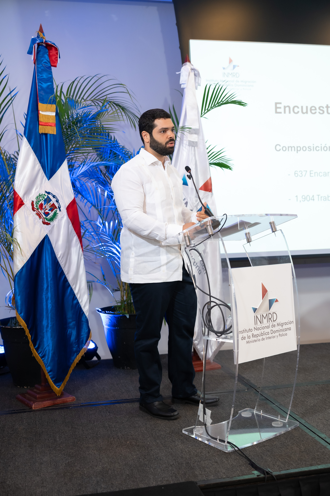

Santo Domingo, Dominican Republic
Social Statistics & Research
Clinical psychologist and scientific researcher from Santo Domingo, Dominican Republic, with over 15 years of experience in the field of drug addiction treatment and assessment. Additionally, I have 5+ years of expertise as a data scientist, focusing on social sciences and statistical analysis.
I currently work as a quantitative researcher at the Dominican Republic National Institute of Migration (INMRD), where I conduct and review migration studies. I also work as a psychotherapist alongside the team at Centro de Salud y Desarrollo Troncoso Bello, where I conduct clinical research.

02
R Markdown · RPubs portfolio
Santo Domingo, 2019–2022 — descriptive analysis of admissions to a behavioral clinic, built on the same dataset behind the UASD research thesis above.
1950–2011 — exploration of NOAA storm data to rank events by population health impact and economic damage.
Análisis estadístico sobre la relación entre impulsividad y comportamiento agresivo en la conducción vial.
Walkthrough of an exploratory data analysis workflow in R — cleaning, summarizing, and visualizing a raw dataset.
Applying tidy-data principles to reshape and merge raw survey data into an analysis-ready format in R.
Aplicación de pruebas de hipótesis estadísticas en R sobre un conjunto de datos de estudio.
Segunda parte del análisis de pruebas de hipótesis, con nuevas variables y comparaciones estadísticas.
Construcción e interpretación de un modelo de regresión lineal múltiple en R, evaluando supuestos y ajuste del modelo.
Segunda parte del modelado de regresión lineal múltiple, con variables adicionales y diagnóstico del modelo.
More reports on rpubs.com/AA24.
03
04